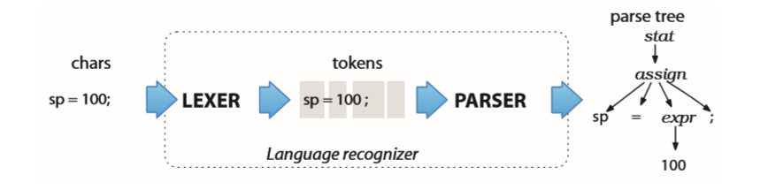

第二章——antlr纲要
![]()
现在我们已经安装好了antlr并且知道了怎么去构建和运行一个简单的例子，接下来我们就来了解一下纲要。在这章，我们会了解语法解析的几个重要步骤，学习一些术语，并且接触相关的数据结构。在学习的过程中，我们了解会一些antlr中重要的类，以及，antlr在背后为我们做了什么。
2.1 开始
为了实现一个语言，我们必须构建一个可以读取句子，并对它所发现的短语、输入符号做出合理的动作的程序（语言由一系列合法的句子组成，句子由一系列的短语组成，短语又由子短语和字母符号组成）。概括地说，如果一个程序可以计算或者“执行”一些句子，我们就可以把它叫做“解释器”，例如计算器、配置文件的处理程序和Python的解释器；而如果我们可以用它把一种语言转换为另一种语言的话，那么我们就可以把它叫做“翻译器”，例如将Java转换为C#的翻译器，以及，我们所经常使用的编译器。
我们的解释器或者翻译器要想能够工作起来，它就必须可以识别所有合法的句子、短语、子短语。识别句子意味着它可以分辨多种不同的语法组成成分，并且将它和其他的区别开来。例如，sp=100;，我们可以识别出，它是编程语言中的赋值语句。这就意味着，我们知道sp是赋值目标，100是它将要储存的值（相似地，如果我们去识别英语句子的话，我们必须分辨出它的主语、谓语和宾语）。能识别像sp=100;这样的赋值语句，也意味着它可以明确地将它和其他的语句区别开来。而识别之后，它便可以进行一些操作，来实现这个句子体现的功能，例如performAssignment("sp",100)或者translateAssignment("sp",100)。
识别语法结构的程序，我们叫它语法分析器（parser或者syntax analyzer）。语法是由一系列的语法规则组成的，而语法规则是用来描述句子结构的，在这本书中，我们将会学习如何通过antlr来描述语法规则。如果不使用antlr，我们可能就需要自己动手来编写语法分析器了，这是一个经验丰富的程序员也很难做到的事，但是，有了antlr后，我们就可以直接用它来生成特定语法的分析器了。在antlr中，用来描述语法的是一种专门优化过的用来描述语法的语言：antlr的元语言。
如果我们把解析过程分为两个相似但又完全不同的阶段的话，它会变得容易理解得多。以我们阅读英语句子的过程为例（它很大程度上展示了我们大脑是怎么工作的），我们并不是一个一个字母来阅读的，而在分析句子结构之前，将一个个字母组合成单词，然后在大脑里的字典里查找它们的意思。这个过程在平时阅读英语时可能并没有这么明显，但是在我们阅读摩尔斯电码（译者注：一种早期的数字化通信形式，它的代码包括五种：点、划、点和划之间的停顿、每个字符间短的停顿（在点和划之间）、每个词之间中等的停顿以及句子之间长的停顿。对照表）时，我们就可以明显感觉到这个过程了，因为，在从摩尔斯电码中获取信息之前，我们必须先将这些点点线线转换为字符。当然，阅读很长的单词，例如Humuhumunukunukuapua’a（译者注：世界上名字最长的鱼，生长在夏威夷，意思为这鱼的嘴巴像猪一样,有什么生物的名字大家一听就会笑？）时，这个感觉也会很明显。
这个将字符序列分割、组成为单词的阶段，我们叫它词法分析，或者简单地称为tokenizing，而这个用来进行词法分析的程序，我们叫它词法分析器（lexer）。词法分析器可以将token分为不同的类型，例如INT（整数）、ID（标识符）、FLOAT（浮点数）等等（语法分析器只关心token的种类）。每一个token至少都必须包含两个信息：token类型和字符串字面值。
而第二阶段，输入token流，并且分析出它的句子结构（在上面的例子中，是一个赋值语句），才是真正意义上的语法分析。默认地，antlr生成的语法分析器会构建一个叫做语法分析树的数据结构来记录语法分析器是怎样从输入的句子识别出它的结构的。举例说明，下图是一个语言程序基本的数据流：

语法分析树的叶子都是输入的token，内部节点是短语名称，而根节点是最抽象的短语名称（在这个例子中是stat）。句子（线性的字符序列）和语法分析树在硬件上其实是相通的，句子其实就是一棵棵的语法分析树。为了将我们的想法传达给他人，我们必须通过单词流把幻想中语法分析树“塞进”他们脑中。
通过构建语法分析树，语法分析器将一个可以方便处理的数据结构传递给了语言应用程序的剩余部分，最后，剩余的部分将会从中提取出输入的句子的完整信息。在后面的步骤中，使用树形结构的好处有很多，一个是因为树形结构解析起来比较方便，而且，程序员们可以很容易地理解它。而另一个是，语法分析器可以自动地构建语法分析树。
通过遍历语法分析树的方式，一个语法分析器可以被多个应用程序重用。除此之外，你也可以把特定的代码片段嵌入到语法声明中（用来生成语法分析器的程序通常都会这么做）。antlr v4依然支持这种做法（查看第十章），但是，遍历语法解析树的方式更加简洁，耦合性也更低。
另外，在计算token属性依赖需要进行多遍（某个阶段需要前一个阶段收集的信息）的情况下，语法分析树是非常有用的。而在其他的情况下，一个应用如果太过复杂，也可以通过这种方式将其分解为一系列易于编写和测试的片段。相比于每次都重新解析输入串，对一个语法分析树进行多次遍历的效率不知道高到哪里去了。
因为我们通过一系列的规则来指定语法结构，所以语法分析树的子树的根节点相当于是语法规则的名称。为了提前熟悉一下我们接下来需要讲的东西，我们先看一下赋值语句的语法规则：
assign : ID '=' expr ';' ; // 识别像 sp = 100; 这样的句子
我们需要理解antlr是怎样把这样的规则翻译为可读的解析器代码的，这对于后面的使用、调试语法是非常重要的，所以，让我们深入一些，看一下语法分析的过程是怎样的。
2.2 语法分析器的实现
antlr通过解析像先前看到的assign这样的语法规则来生成递归下降语法分析器。递归下降语法分析器其实就是一系列的递归方法，每个方法对应一个语法规则。下降这个术语表明，分析时，我们是从树的根节点开始，逐步分析到树叶（token）的。在构建语法分析树时，我们最先调用的语法规则（开始符号），成为树的根节点（在上一节中，是调用stat()）。这种分析方法，我们叫做自顶向下语法分析，递归下降语法分析器其实就是一种自顶向下语法分析的实现。
为了让大家理解递归下降的概念，这里有一个缩减版的antlr为assign生成的递归方法：
// 语法规则：assign : ID '=' expr ';'
void assign() { //为语法规则 assign 生成的方法
match(ID); //匹配 ID
match('=');//匹配 =
expr(); // 匹配表达式 expr
match(';');//匹配 ;
}
递归下降语法分析器有一个很酷的地方，它调用stat()、assign()和expr()时的调用栈和语法分析树的内部节点是一一对应的，而match()方法则相当于是语法分析树的叶子节点。如果要手动构建一个语法分析树的话，我们可以在每条语法规则对应的方法前插入添加新的子树根节点的操作，在match()方法前插入添加新的叶子节点的操作。
assign()的功能仅仅只是确保所有需要的token都存在，并且以正确的顺序排列。当语法分析器进入assign()方法时，它没有其他的候选项（候选项是在一条语法规则中，右边的可选择项）。例如，stat包含了assign，但它也包含其他的语法规则：
//匹配以下任何一种
stat: assign //第一个候选项（"|" 是候选项的分隔符）
| ifstat //第二个候选项
| whilestat //第三个候选项
...
;
像stat这样的语法规则对应的方法像是一个switch语句:
void stat() {
switch ( ?当前输入token? ){
CASE ID :
assign();
break;
CASE IF :
ifstat();
break; // "IF"是关键字if的token类型
CASE WHILE :
whilestat();
break;
...
default :
?抛出异常?
}
}
如上，stat()方法必须通过检查下一个token的类型来决定接下来应该选择哪一个方法才可以正确解析（称作预测分析）。以上面为例，当看到一个WHILE关键字时，选择第三个候选规则，于是stat()调用whilestat()。你以前可能听过前瞻符号(lookahead token)（译者注：或者，向前查看符号……好难翻译啊……）这个术语，其实它就是下一个将要输入的token。
有时，语法分析器需要向前查看很多的token来决定该选择哪一个语法规则，甚至可能需要查看从当前位置直到文件末尾的所有token。虽然antlr默默为你处理了所有这些工作，你大可不必劳神，但是对预测分析有一个基本的认识的话，对接下来的学习会有很大帮助。
设身处地想象一下，你处在一个复杂的迷宫中，它只有一个入口和出口，并且每条路的地上都写有一些单词，从入口到出口的路上遇到的单词便组成了句子。这个迷宫的结构和语法规则其实是相似的。为了测试一个句子是否符合某个语法，我们将这个句子的每个单词和在迷宫中遇到的单词进行比较，如果最后我们能根据这个句子走出迷宫，那么这个句子就是合法的。
为了走出迷宫，在每个分岔路口，我们必须选择一条正确的路，就像在语法分析时的预测分析一样，从多个候选项中选择一个正确的。为了从中选择出正确的路，我们可以将分岔路口上可以看见的单词和我们的句子中的单词进行比较。这些分岔路上的单词，就是前瞻符号。如果每条路上的第一个单词都是不一样的，那么我们就可以很容易地做出选择。在规则stat中，每一个候选项的第一个token都不相同，所以stat()可以通过查看第一个前瞻符号来做出选择。
但是当每条分岔路的第一个单词有重叠时，语法分析器就必须向前查看更多token了，直到将每条分岔路区别开来。antlr会根据需要，在做预测分析时自动调节向前查看的token的个数。如果一直到出口（文件尾），都存在相同的前瞻符号，那么输入的句子便是具有多种解读方式的（二义性）。如何消除二义性，是我们下一节的内容。而学习完下一节之后，我们将学习如何通过语法分析树来构建语言应用。
2.3 You Can’t Put Too Much Water into a Nuclear Reactor
一个短语或者句子如果可以通过多种方式来解读，那么可以说它是具有二义性的。换句话说，它可以匹配多种语法（可以构建多棵不同的语法树）。本节的标题You Can’t Put Too Much Water into a Nuclear Reactor是一个多年前我从《周六夜现场》（译者注：一个每周六深夜播出、60多分钟的美国综艺节目，以纽约市为拍摄地，自1975年10月11日由NBC播出，是美国电视史上最长寿的节目之一）看到的具有二义性的句子，你不知道，你是应该放很多水到核反应堆中还会应该避免这么做。
译者注：
在英语中，有一个句式，
can not ... too much，表示“再…都不为过”。同时，它也有字面上的意思，“不能太….”。所以，You Can’t Put Too Much Water into a Nuclear Reactor有两种解读方式，一是”你不能放太多水到核反应堆中“，还有就是”你向核反应堆中放再多水也不为过“，具有二义性，需要结合语境分析。
For Whom No Thanks Is Too Much
我最喜欢的二义性句子之一是在我的好朋友Kevin的Ph.D论文的赠言页上：“To my Ph.D. supervisor, for whom no thanks is too much.”，你根本不清楚他是不是在感谢。Kevin说不是，所以我问他为什么博士后又跟了同一个导师，他说：“复仇。”
二义性在自然语言中是很有趣的，然而在编程语言中，二义性将会导致很大的问题。为了解释或者翻译一个句子，解释器或者翻译器必须能准确无误地识别它的意思。这就意味着，我们必须提供不具有二义性的语法，以确保生成的语法分析器只能以一种方式来解读输入的句子。
我们还没详细地学习语法的构建，但这里我们举一个具有二义性的语法来加深二义性的理解。如果在之后的开发中，你遇到了二义性的问题，你可以回过头来看这一节的内容。
有一些语法的二义性是非常明显的：
stat: ID '=' expr ';'
| ID '=' expr ';' //嗨呀好气呀！完全一样啊！
;
expr: INT ;
但是，通常来说，二义性是非常隐藏的，就像下面这个一样：
stat: expr ';' //语句
| ID '(' ')' ';' // 函数调用
;
expr: ID '(' ')'
| INT
;
对于f();，有以下两种解读方式：
左边的语法匹配了第一个候选项（语句），右边的匹配了第二个候选项（函数调用）。
因为多数语言的发明者都会把他们的语法设计为没有二义性的，所以一个具有二义性的语法相当于是程序中的bug。我们需要重新组织语法，确保每个输入串只有一个解析方式。如果语法分析器检测到了二义性的句子，它必须从候选项中挑选一个可行有效的。antlr默认会通过挑选第一个候选项来消除二义性。在这种情况下，语法解析器会选择将f();解析为左边的语法分析树。
二义性不仅仅会出现在语法分析中，在词法分析中有时也会出现，但是antlr都帮你将二义性消除了。antlr消除词法二义性的方法也是选择第一个（在语法声明中，第一个符合的词法规则）。我们可以看一个例子来理解：在多数的编程语言中，关键字和标识符的二义性。关键字begin（后面跟随一个非字母字符），也是一个标识符，所以，词法分析器可以将b-e-g-i-n和这两个词法规则匹配。
BEGIN : 'begin' ; //关键字
ID : [a-z]+ ; //标识符
需要记住的一点是，词法分析器会尽可能地匹配多的字符，所以，beginner将只会匹配为标识符，而不是关键字begin后面加上一个标识符ner。
有时，有些语法天生就是二义性的，无论你怎么改变它也不能改变这个事实。例如，算术运算的表达式就是具有二义性的，你可以将1+2*3用两种方式来解析，从左到右计算（像Smalltalk那样），或者像多数语言那样，按照运算符优先级来计算。我们将会在第五章第四节学习如何显示地声明运算符的优先级。
C语言中，存在另一种二义性，我们需要根据上下文信息，例如标识符是怎么被声明的（译者注：上下文有关文法）来消除它。例如这个代码片段：i*j，它看起来像是乘法表达式，但是，它的具体语义，还需要根据上下文信息来决定，看i是一个类型名称还是一个标识符。如果i是类型名称，那么这个代码片段就不是乘法表达式，而是声明j是一个类型为i的指针。我们将会在第十一章学习如何解决这些二义性。
语法分析器所能做的是保证输入是有效的，以及构建语法分析树，这是很重要的东西，但是，我们需要先暂时放下这部分了，因为是时候学习如何根据语法分析树来解释或者翻译输入了。
2.4 通过语法分析树构建语言应用
为了实现一个语言应用，我们必须对每一个输入的短语或者子短语执行一些合适的代码。做这些，最简单的方式是，在语法分析器构建的语法分析树上执行这些代码。这样，我们又回到了熟悉的java的领土中，不再需要学习antlr的语法了。
接下来，我们会更加深入地了解一下在antlr中用来识别句子和解析语法树的数据结构和相关的类，如果你先前有良好的数据结构的基础，那么，你对下面的内容的理解会更准确。
在前面，我们学习到，词法分析器处理输入字符，并且将得到的token传递给语法分析器，然后语法分析器会依次检查语法的正确性，并且构建一棵语法分析树。涉及到的antlr中的类有：CharStream、Lexer、Token、Parser、ParseTree。连接词法分析器和语法分析器的“管道”是TokenStream。下图展示了这些东西是如何结合在一起的：
为了减少计算机的内存消耗，这些antlr数据结构会尽可能共享多的数据。上图显示，叶子节点（token）在语法分析树中是指向token流中的token的容器。token记录了该token在CharStream中起始位置和结束位置的索引，而不是复制一份。同时，因为我们在词法规则中设定跳过空白符，所以，并没有与空白符（索引2和4）相关的token。
在这个图中也说明了，ParseTree的子类RuleNode和TerminalNode分别代表了子树根节点和叶子节点。RuleNode和ParseTree一样，有一些相似的方法，例如getChild()和getParent()，但是，RuleNode并不特定于某种语法。为了更好地支持每一个节点的访问，antlr为每条规则生成一个RuleNode的子类。下图显示了之前那个赋值语句语法生成的特定的类，它包含了StatContext、AssignContext和ExprContext：
这些被称作上下文对象，因为它们记录了在识别过程中的所有上下文信息。每一个上下文对象都知道已经识别的短语的起始token和结束token，并且可以提供了对这些短语的访问。例如，AssignContext提供ID()和expr()方法来访问标识符节点和表达式子树。
提供了以上这些类型后，我们可以手动写代码来对语法分析树进行深度优先遍历，我们可以在我们进入或者退出某个节点时做任何我们想做的操作。例如进行表达式的计算、更新数据结构，或者产生输出。然而，我们大可不必这么麻烦，我们可以直接使用antlr自动生成的树遍历机制。
2.5 语法分析树的监听器(Listener)和访问者(Visitor)
antlr在它的运行时中提供了两种树遍历机制。默认地，antlr会生成一个Listener接口，对内置的树遍历器触发的事件作出反应。这些监听器和解析XML文档的SAX（译者注：Simple API for XML，一种事件驱动的XML解析接口规范）文档处理对象很类似。SAX的监听器可以接受像startDocument()和endDocument()这样的事件的通知。在监听器中的方法其实就是像在GUI程序的事件处理中的回调。在我们学习完Listener后，我们还会学习antlr生成的另一种符合访问者模式（译者注：访问者模式）的树遍历器。
2.5.1 语法分析树的监听器(Listener)
为了遍历语法分析树，并且触发监听器的事件，antlr的运行时中提供了ParseTreeWalker类。而为了实现我们的语言应用，我们可以实现ParseTreeListener接口，并且在每个方法中包含特定的代码。
antlr为每一个语法生成一个ParseTreeListener的子类，其中包含每一个语法规则的enter和exit方法。例如，在遍历器遇到规则assign的节点时，它将会触发enterAssign()并且给它传递AssignContext参数；而在遍历器遍历了assign所有的子节点后，它将会触发exitAssign()。下图展示了ParseTreeWalker是如何进行深度优先遍历的（用虚线表示）：
上图也显示了ParseTreeWalker是在哪里触发规则assign的enter和exit方法的（其他的监听方法没有显示出来）。
而下图则展示了ParseTreeWalker的完整监听器方法调用队列：
监听器的好处在于，它完全是自动的，你不需要自己去写遍历器，而且监听器的方法也不要显式地访问各个节点的子节点。
2.5.2 语法分析树的访问者(Visitor)
然而，在某些情况下，我们希望自己能够控制遍历的过程，显式地调用方法来访问子节点。在使用antlr生成时，加上参数-visitor将会生成一个Visitor接口，它包含了对每一个规则的访问方法。它会对语法分析树进行一些和访问者模式类似的操作：
上图中的粗虚线显示了语法分析树的深度优先遍历过程，细虚线表明了Visitor的方法调用队列。为了发起语法树的遍历，我们可以创建一个Visitor接口的实现，然后调用visit()方法。
ParseTree tree = ... ; //tree是语法分析后构建的语法分析树
MyVisitor v = new MyVisitor();
v.visit(tree);
当发现根节点时，antlr的运行时库将会调用visitStat(),而后，将会根据你的Visitor接口的实现，调用以子节点作为参数的visit()方法，继续访问子节点。或者，通过visitMethod()显示调用visitAssign()等方法。
antlr不鼓励我们自己去实现生成的Visitor接口，而是生成了一个带有默认实现的Visitor实现类，这样，我们就可以避免实现接口中每一个方法，而只是覆盖我们感兴趣的方法。我们将会在第七章更加详细地学习Listener和Visitor。
一些术语
这章介绍了一些重要的形式语言学的术语:
语言语言是有效的句子的集合；句子由短语构成；短语又由子短语构成。
语法语法是语言的形式化描述，由语法规则构成，每个规则表述了子短语的结构。
语法树或解析树用来表述句子结构的数据结构，每个子树的根节点代表语法规则，叶子节点代表token。
Tokentoken是一个字符符号；通常用来表示不同种类的标记，例如标识符、操作符或者关键字。
词法分析器将输入字符串分解为token流；进行词法分析。
语法分析器语法分析器用来检查句子的有效性；antlr会生成叫做ALL(*)的自顶向下语法分析器（因为它可以将所有的输入token用做预测分析）。
递归下降语法分析器自顶向下语法分析的一种实现，每一个函数对应一条语法规则。
前瞻符号(Lookahead token)在预测分析时，语法分析器用来和每个候选项比较的token。
现在，我们已经对antlr的整体纲要有了一定的了解，我们学习了从字符流到语法分析树的过程中涉及的数据结构，认识了antlr运行时中的重要的几个类的名字。并且，我们刚刚对antlr的Listener和Visitor机制有了一个粗略的认识。接下来，在下一章，我们会通过一个实例来加深理解。